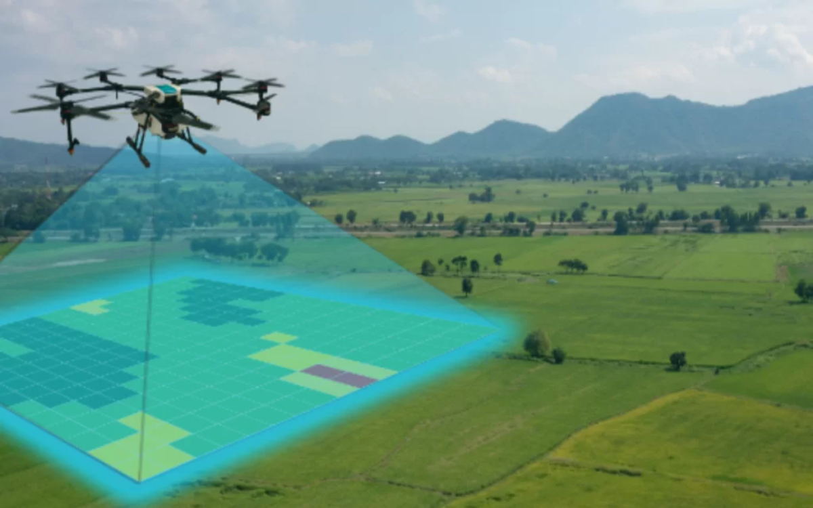

Mapeamento
Mapeamento com Drone
Periometria para precisão nas aplicações

Pulverização Agrícola
Serviço de pulverização
ALTA TECNOLOGIA NA PULVERIZAÇÃO AGRÍCOLA!
Periometria para precisão nas aplicações
ALTA TECNOLOGIA NA PULVERIZAÇÃO AGRÍCOLA!
Locação de máquinas para todos os tipos de serviços, seja para pequenos ou grandes hectares

Tempos de operação são minimizados e mantém uma produtividade mais elevada que a carga balde, evitando o desperdício. As carregadoras frontais John Deere podem te ajudar nas mais diversas atividades dentro da sua propriedade, com ergonomia, segurança, facilidade de acoplamento e durabilidade.

O trator 3036EN foi projetado para o segmento de culturas especiais e operações que necessitam de um trator com dimensões reduzidas. Podendo ser usado também em pequenas propriedades, chácaras, sítios e condomínios residenciais.Com um motor de 36cv, PTO econômica e raio de giro reduzido, este trator é a combinação perfeita de potência, economia e versatilidade.Surpreenda-se!!

As carregadoras frontais John Deere foram desenhadas para melhorar o seu rendimento diário. Seja carregando materiais, transportando equipamentos, melhorando estradas ou mantendo sua propriedade, uma carregadora John Deere pode ajudá-lo a obter muito mais do seu dia.

O trator de esteira é a escolha ideal para quem busca uma máquina potente, durável e eficiente. Com suas características avançadas e benefícios comprovados, ele proporciona um excelente retorno sobre o investimento, garantindo a satisfação e o sucesso de seus projetos.
Endereço: R. Paulo Kraisch, 117 - Vila do Salto, Luiz Alves - SC, 89128-000
WhatsApp: (47) 98765-4321
Email:alves
Horário: Seg-Sex, 08:00 - 18:00
Aqui entrará o Google Maps